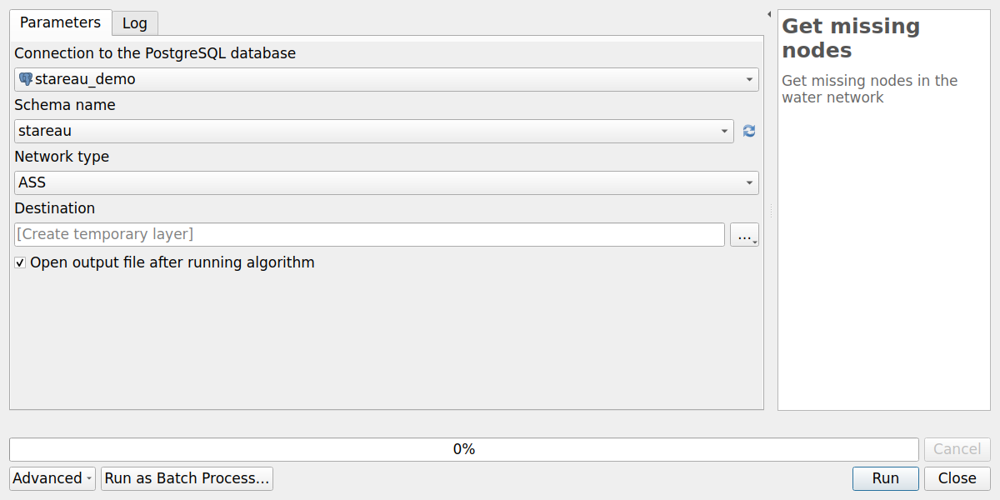
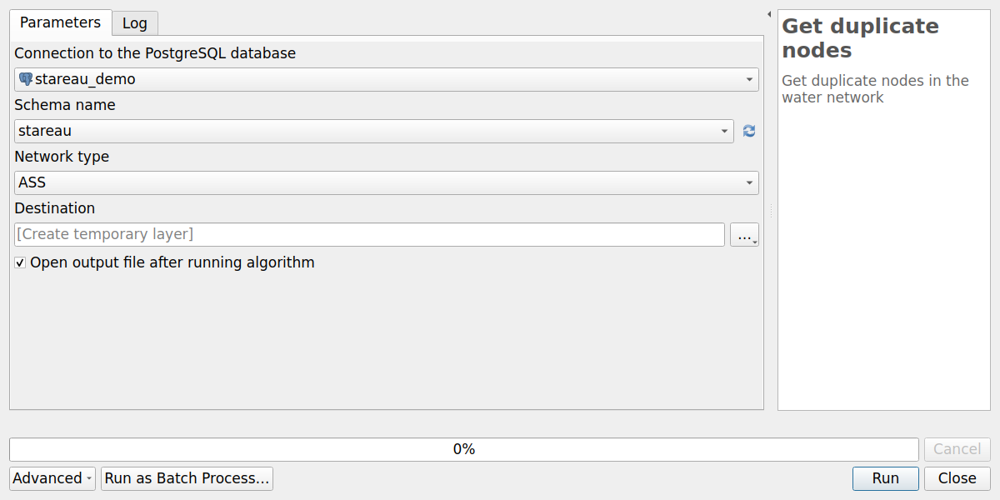
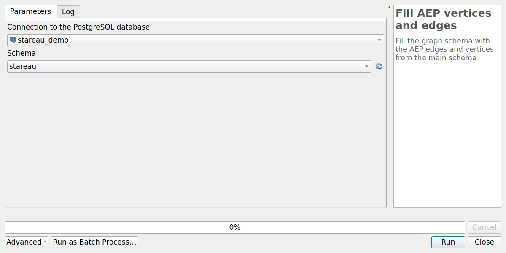
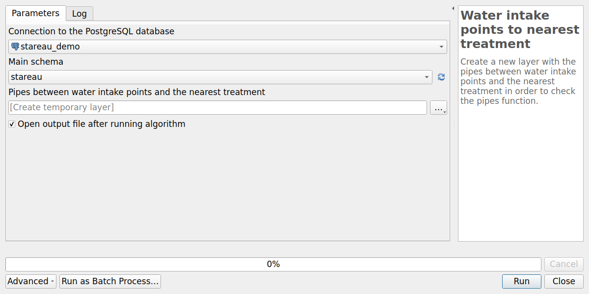
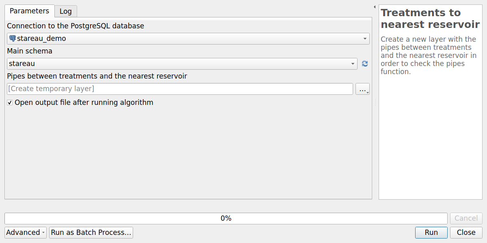

Processing algorithms#
The plugin adds the provider StarEau to the QGIS Processing toolbox (menu Processing / Toolbox).
All the algorithms are also available with the buttons of the StarEau panel.
| Group | Algorithm | Usage |
|---|---|---|
| Configuration | Configure plugin | Choose the PostgreSQL connection of the project |
| Structure | Create database structure | Install the StaR'Eau schemas in the database |
| Structure | Upgrade database structure | Upgrade the schemas after a plugin upgrade |
| Administration | Create database local interface | Create the QGIS administration project |
| Structure | Get missing nodes | Find the start and end points of the pipes without node |
| Structure | Get orphan nodes | Find the nodes which are not linked to any pipe |
| Structure | Get duplicate nodes | Find the orphan nodes located at the same place as another node |
| Structure | Fill AEP vertices and edges | Build the routing graph of the drinking water network |
| Structure | Water intake points to nearest treatment | Pipes between each water intake and the nearest treatment plant |
| Structure | Treatments to nearest reservoir | Pipes between each treatment plant and the nearest reservoir |
All the algorithms have a parameter Connection to the PostgreSQL database:
by default, the connection chosen with the algorithm Configure plugin.
The algorithms are not available in the Processing model designer.
Configuration#
Configure plugin#
Choose the PostgreSQL connection used by the current QGIS project. It must be run before the other algorithms. See Configure the plugin.
Structure#
Create database structure#
Install the StaR'Eau schemas, with their tables and value lists, and the schema stareau of the plugin,
with its functions and triggers.
See Create the database structure.
Upgrade database structure#
Upgrade the database structure to the version of the plugin, after a plugin upgrade. The StarEau panel shows if an upgrade is needed. See Upgrade database structure.
Administration#
Create database local interface#
Create a QGIS administration project with all the layers and actions. See Create your database local interface and Administration project.
Network checks#
The three following algorithms help to find the topology errors of the network. They have the same parameters:
Connection to the PostgreSQL database,Schema name: the schema of the plugin. Default:stareau,Network type:ASS(sanitation network) orAEP(drinking water network),Destination: the output point layer.
The output layer is a copy of the result: run the algorithm again after correcting the data.
Get missing nodes#
Find the missing nodes: the start and end points of the pipes whose initial or terminal node
is non_renseigne. Two pipes ending at the same point give only one missing node.

The output layer Missing nodes contains the fields:
| Field | Description |
|---|---|
fid |
Identifier of the missing node |
id_canalisation_upstream |
id_canalisation of the pipe ending at this point, if any |
id_canalisation_downstream |
id_canalisation of the pipe starting at this point, if any |
To correct the errors, create a network node at the location of each missing node: the pipes are then linked automatically to the new node, see Network topology.
Get orphan nodes#
Find the orphan nodes: the network nodes which are neither the initial node nor the terminal node of any pipe.
The output layer Orphan nodes contains the fields of the table noeud_reseau.
It can be a normal situation, for example for an isolated object, or an error, for example a node
drawn more than 10 cm away from the end of a pipe.
Get duplicate nodes#
Find the duplicate nodes: the orphan nodes located at the same place as another network node.

The output layer Duplicate nodes contains the fields of the table noeud_reseau.
These nodes can usually be deleted.
Network analysis#
These algorithms work on the drinking water network, and need the pgRouting extension. See Network analysis.
Fill AEP vertices and edges#
Build the routing graph of the drinking water network, used by the pgRouting functions:
the tables stareau.aep_vertex and stareau.aep_edge are emptied, then filled with:
- the vertices: the AEP network nodes, and the missing nodes of the AEP network
(
fictif = True), - the edges: the AEP pipes, between their initial and terminal vertices. The cost of an edge is the length of the pipe, in both directions.

Parameters:
Connection to the PostgreSQL database,Schema: the schema of the plugin. Default:stareau.
The graph is not updated automatically: run this algorithm again after each modification of the drinking water network, before using the network analysis tools.
Water intake points to nearest treatment#
For each water intake (aep_captage), find the path to the nearest treatment plant (aep_traitement)
on the drinking water network, and create a layer with the pipes of these paths.

Parameters:
Connection to the PostgreSQL database,Main schema: the schema of the plugin, e.g.stareau,Pipes between water intake points and the nearest treatment: the output line layer.
The output layer Pipes layer contains the fields of the table aep_canalisation,
and is styled by pipe function (fonction_canalisation): adduction, transport,
transport-distribution, distribution.
It helps to check the function of the pipes: the pipes carrying the raw water from the
water intakes to the treatment plants should be adduction pipes.
Treatments to nearest reservoir#
For each treatment plant (aep_traitement), find the path to the nearest reservoir (aep_reservoir)
on the drinking water network, and create a layer with the pipes of these paths.

Parameters:
Connection to the PostgreSQL database,Main schema: the schema of the plugin, e.g.stareau,Pipes between treatments and the nearest reservoir: the output line layer.
The output layer Pipes layer is styled by pipe function, like the previous algorithm.